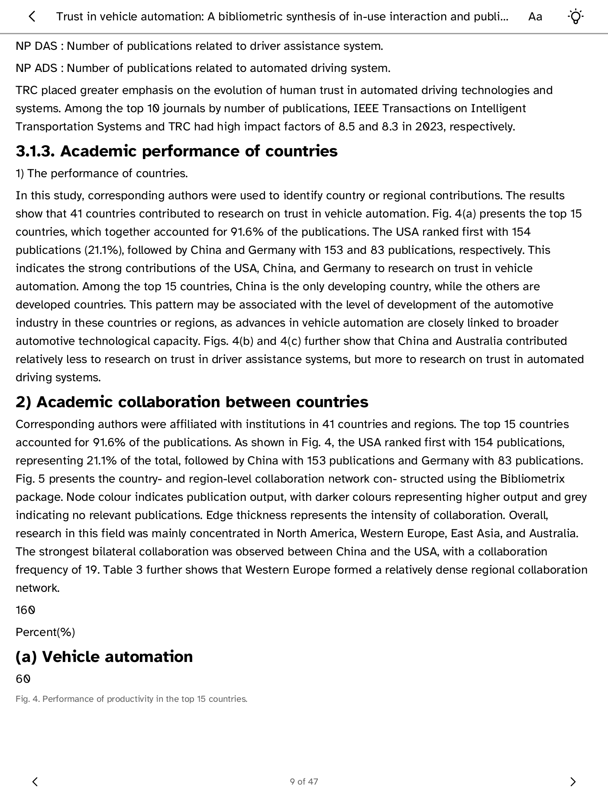

Direct mode
The Kobo reads collections, metadata, abstracts, and Zotero indexed text directly from Zotero API v3. No personal server is required.
Your Zotero reading lists on a Kobo, with a serverless core and an optional rich-PDF conversion service.

The Kobo reads collections, metadata, abstracts, and Zotero indexed text directly from Zotero API v3. No personal server is required.
An optional FastAPI and Docling service converts stored Zotero PDFs into structured HTML with tables, formulas, OCR, and figures.
| Need | Use | Trade-off |
|---|---|---|
| Simple personal reading | Direct mode | Indexed plain text has no original figures or layout. |
| Tables, formulas, OCR, figures | Conversion bridge | Requires an always-on Docker host and stores derived content temporarily. |
| Share with unrelated users | Not supported in v1 | The bridge is single-user; public multi-tenant hosting needs a different authentication and isolation design. |
The direct Zotero key is stored by the Cobalt runtime and is available only to the exact read routes authorized for the runtime-verified zotero-reader app ID. The app never sees the secret value. The optional bridge uses a different token bound to one compiled HTTPS origin and its /v1/ API. Credentialed redirects are refused.